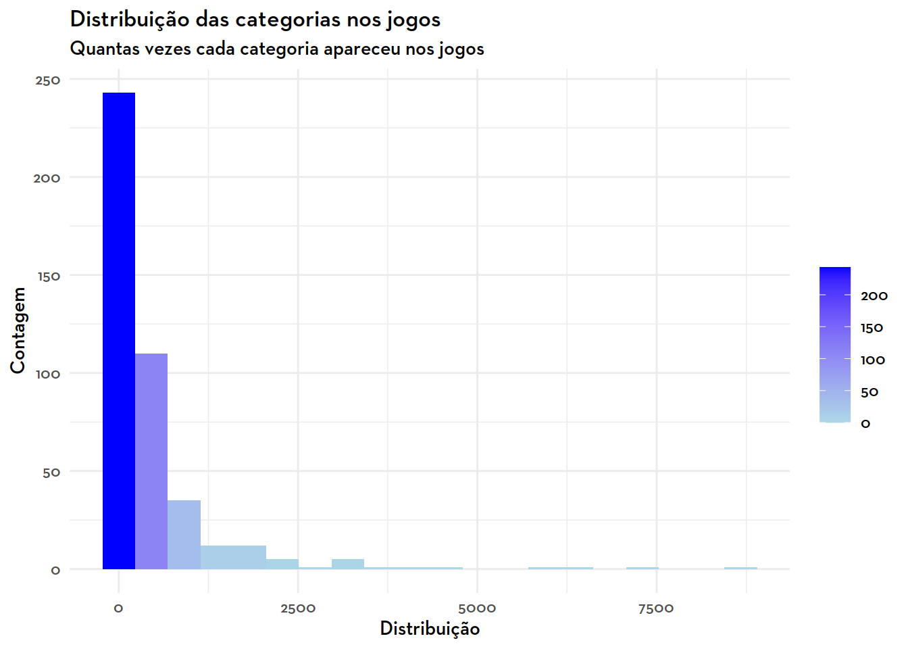

A ideia desta análise é ilustrar os conhecimentos adquiridos em R, começando com uma análise exploratória dos dados, e tentando trazer alguns insights relacionados à empresas que queiram lançar jogos e ter sucesso no mercado.
Primeiro problema
Somos um estúdio de jogos e queremos analisar: 1 - Qual gênero/categoria de jogo tem mais sucesso na steam, definindo sucesso como melhores avaliações; 2 - Também queremos analisar qual faixa de preço é mais interessante para o lançamento desse novo jogo, ou seja, qual faixa de preço tem maior número de vendas.
Primeiro passo - Análise exploratória
Inicialmente iremos fazer uma análise exploratória de algumas bases de dados e suas variáveis que podem ser interessantes para determinar sucesso de um jogo, a faixa de preço, a quantidade de vendas e relacionar essas questões aos gêneros e categorias. Foram feitas análises de três bases de dados, a primeira mais completa, e as duas seguintes mais focadas em reviews de usuários.
Base de dados - 1
Código
########################################################################################## ##' Parte do arquivo de análise exploratória#' Arquivo focado na análise da primeira base#' #' Autor: Mikael Marin Coletto#' Data: 11/03/23########################################################################################## ### 0.1 - Bibliotecas e scripts fontes----# library(ggplot2)# # library(janitor)# source(here::here("R/fct-auxiliares/fct_filter_not_games.R"))
A base de dados usada para esta análise se encontra no Kaggle, através deste link:
Usarei o Skimr para a base de dados completa e verificarei quais dados podem ser melhor investigados.
Código
# ## Dados de conexão com o banco da Steam no mongo# mongolite::mongo_options(log_level = 1)# mongo_db_user <- config::get("mongo_db_user", file = "config/config.yml")# mongo_db_password <- config::get("mongo_db_password", file = "config/config.yml")# mongo_db_url_extra <- config::get("mongo_db_url_extra", file = "config/config.yml")# mongo_database <- config::get("mongo_database", file = "config/config.yml")# mongo_collection <- config::get("mongo_collection_full", file = "config/config.yml")# # url_srv <- paste0("mongodb+srv://", mongo_db_user, ":", mongo_db_password, mongo_db_url_extra)# mongo_db <- mongolite::mongo(collection = mongo_collection, db = mongo_database, url = url_srv, verbose = TRUE)# # ## Lendo e criando um dataframe com os dados do mongoDB# df_base_1 <- as.data.frame(mongo_db$find())df_base_1 <- data.table::fread(here::here("data-raw/steam-data/db-1/games.csv"))
Código
# skimr::skim(df_base_1)
Código
## Usaremos a função do Janitor para editar os nomes das colunas e torná-las mais fáceis de serem manipuladas## E então faremos a seleção das colunas que serão analisadasdf_selected <- df_base_1 |> janitor::clean_names() |> dplyr::select(app_id, name, developers, publishers, categories, genres, tags, release_date, estimated_owners, peak_ccu, price, windows, mac, linux, metacritic_score, user_score, positive, negative, recommendations, average_playtime_forever, median_playtime_forever, average_playtime_two_weeks, median_playtime_two_weeks) |> dplyr::mutate(release_date = lubridate::mdy(release_date))
Removendo Softwares e não jogos
Após a análise inicial, foi detectado que existiam nesta base de dados softwares que não eram considerados jogos, portanto eles serão excluídos para que não comprometam as futuras análises.
Vamos utilizar a variável genres para identificar os gêneros que não são jogos.
Após uma análise inicial das tabelas geradas pelo skimr, selecionei algumas variáveis que seriam analisadas mais profundamente. A começar pelas variáveis relativas a notas, críticas e avaliações dos jogos.
Pelo Histograma podemos ver que a variável Metacritic Score (renomeada para metacritic_score) não é muito interessante, seu preenchimento foi visto como completo pelo skim, porém quase em sua totalidade as notas são “0”, ou seja, não temos uma nota definida para avaliar os jogos.
Outras variáveis de avaliação como Reviews, User Score, e Recommendations, foram analisadas porém apresentaram pouco úteis, ou por terem um preenchimento muito baixo ou por envolverem outros tipos de dados (que não fossem uma avaliação direta).
Nova métrica de avaliações
A única métrica que parece interessante de avaliação dos jogos, é a de avaliações positivas e negativas (as variáveis Positive e Negative).
Para isso foi criado uma nova variável, que mede a taxa de avaliações positivas e negativas de um jogo, chamada overall_rate.
[1] 35.29412 91.37931 NaN 100.00000 86.20690 63.97059 75.00000
[8] NaN 92.68293 83.33333 73.53308 71.70732 100.00000 76.59574
[15] 95.23810 72.25673 100.00000 94.45983 NaN 75.00000 67.77778
[22] 50.87719 78.50369 28.57143 87.30512 62.71186 26.47059 90.47619
[29] 82.75862 NaN 56.09756 66.66667 61.53846 60.84906 100.00000
[36] 77.77778 66.66667 81.39535 70.54291 81.15942 37.67123 73.20819
[43] NaN 77.46948 62.16216 50.00000 79.91676 40.00000 56.60377
[50] 87.50000 100.00000 NaN NaN 50.00000 85.71429 80.23256
[57] 89.03251 10.52632 60.00000 100.00000 0.00000 75.46667 77.77778
[64] 56.45439 100.00000 89.52023 100.00000 100.00000 86.95652 NaN
[71] 96.96845 NaN 89.47368 100.00000 77.77778 40.00000 NaN
[78] 70.45455 NaN 100.00000 27.77778 0.00000 83.33333 83.33333
[85] 100.00000 33.33333 90.32258 76.11940 67.86885 100.00000 NaN
[92] 83.01887 89.70434 76.08696 NaN 96.49192 50.00000 100.00000
[99] 77.77778 100.00000
Analisando essa nova métrica, verificamos que possuímos dados NaN e valores de 100, respectivamente, resultados de de divisões \(0/0\) e de jogos sem avaliação negativa. Os números NaN serão removidos, já que não serão úteis para avaliação dos jogos, os números 100 serão investigados mais a fundo.
E então defini mais alguns filtros, de jogos que possivelmente seriam problemáticos. Estabeleci as regras:
O jogo precisa ter pelo menos 20 avaliações positivas.
O jogo precisa ter pelo menos uma avaliação negativa (para que a avaliação não seja 100% positiva).
O jogo precisa ter pelo menos 50 mil usuários no caso de ser gratuito, e pelo menos 20 mil usuários para jogos pagos.
Deduplicação
Após a análise do novo banco de dados filtrado, descobri mais um problema que precisava ser tratado, dados duplicados. Verificando pelo nome dos jogos, encontrei dados duplicados, mas que possuíam IDs diferentes, avaliações e às vezes preços diferentes. Investigando mais pelo próprio site da Steam e pelo site SteamDB (SteamDB), concluí que se tratavam de dados referentes à novas versões (jogo do ano, versão de luxo, etc), jogos que possuíam versões diferentes (no caso dos Call of Dutys, versões para o jogo campanha e para o jogo multiplayer, mini-expansões, pacotes de skins (aparências para armas e personagens), pacotes de itens pagos como benefícios no jogos, etc. Portanto, decidi remover essas duplicatas, e usarei como base dados de número de usuários (o jogo base muito provavelmente vai ter mais usuários) e número de jogadores.
Então a regra criada para este filtro respeitará, primeiro o número de jogadores, o jogo que possuir mais jogadores permanecerá na base, segundo, em caso de empate do primeiro, o jogo com melhor avaliação.
Base de dados - 2
Código
########################################################################################## ##' Parte do arquivo de análise exploratória#' Arquivo focado na análise da segunda base#' #' Autor: Mikael Marin Coletto#' Data: 12/03/23########################################################################################## #
Como os dados de avaliações eram escassas e eu já havia encontrado outras bases de dados, decidi analisar outras bases e verificar se possuía outra que fosse mais interessante com propósito de verificar dados de avaliação dos jogos.
Após uma investigação da base, verifiquei que ela era um pouco antiga, por não possuir títulos como o “Counter-Strike: Global Offensive”, portanto deixei ela de lado e parti para a análise da outra base de recomendações.
Base de dados - 3
Código
########################################################################################## ##' Parte do arquivo de análise exploratória#' Arquivo focado na análise da terceira base#' #' Autor: Mikael Marin Coletto#' Data: 13/03/23########################################################################################## ### 0.1 - Bibliotecas e scripts fontes----source(here::here("R/fct-auxiliares/fct_filter_not_games.R"))library(dplyr)
Após a análise desta nova base de dados, concluí que ela possui sim dados mais atualizados de jogos (com jogos datados de fev/2023), mas possui menos dados relacionados a línguas suportadas (tanto legendas quanto áudios), dados de pico de usuários, dados de DLC, dados de empresas (como sites, e-mail de suporte, imagem do jogo), dados do Metacritic (por mais que não tenham sido úteis) e dados de tempo de jogo. Então utilizarei ela apenas para verificar a avaliação dos usuários (através das colunas positive_ratio e user_reviews).
Aplicando novamente os filtros utilizados para as bases anteriores, mas adaptando para as colunas desta nova base. Agora, utilizaremos a variável positive_ratio para filtrar as avaliações positivas e user_reviews para o número de reviews. Os primeiros filtros definidos foram:
O jogo precisa ter pelo menos 20 avaliações positivas.
O jogo precisa ter pelo menos uma avaliação negativa (para que a avaliação não seja de 100%).
O jogo precisa ter pelo menos 50 mil usuários no caso de ser gratuito, e pelo menos 20 mil usuários para jogos pagos.
E para o terceiro filtro, a ideia seria fazer uma contagem através da tabela de reviews para verificar a quantidade do número de usuários por jogo. Que é a única tabela que possui os ids de jogos e jogadores numa única tabela.
Porém, ao contarmos quantos jogos distintos haviam na tabela de reviews, tivemos o número de apenas 1900, ou seja, na base temos poucas informações sobre a quantidade de usuários segundo a tabela de reviews, portanto este terceiro filtro não será aplicado.
Deduplicação
O mesmo processo de deduplicação precisou ser feito na nova base.
Porém, ao contrário da base anterior, neste caso todos os jogos “duplicados” se tratavam de jogos diferentes que possuíam o mesmo nome, portanto nenhum deles foi removido.
Adicionando coluna de tags através de outra base (também da base 3)
Código
library(jsonlite)out <-lapply(readLines(here::here("data-raw/steam-data/db-3/games_metadata.json")), fromJSON)## Unindo o terceiro elemento da listafor(i in1:length(out)){ purrr::pluck(out, i, 3)<-paste0(purrr::pluck(out, i, 3), collapse =",")}## Transformando em um dataframe para unir à outra basedf_metadata <-do.call(rbind.data.frame, out)## Adicionando coluna de tags do df_metadata, e adicionando colunas de categoria, genero e tags extra do df anteriordf_base_3_complete <- dplyr::left_join(df_base_3, df_metadata, by ="app_id") |> dplyr::select(-description)
########################################################################################## ##' Parte do arquivo de análise exploratória#' Arquivo focado em verificar a diferença entre as bases#' #' Autor: Mikael Marin Coletto#' Data: 12/03/23########################################################################################## #
Código
# Antijoins através do ID, analisando diferenças entre bases## Verificando jogos que estão na base 1 mas não na base 3, base extraídagames_antijoin_base_1_ext <- dplyr::anti_join(df_selected[, c("app_id", "name", "positive", "release_date")], df_base_3[, c("app_id", "title")],by ="app_id")## Verificando jogos que estão na base 3 mas não na base 1, base extraídagames_antijoin_base_3_ext <- dplyr::anti_join(df_base_3[, c("app_id", "title", "user_reviews")], df_selected[, c("app_id", "name", "positive", "release_date")],by ="app_id")# Verificando jogos após filtragem de bases## Verificando jogos que estão na base 1 mas não na base 3, base filtradagames_antijoin_base_1_filt <- dplyr::anti_join(df_selected_gen[, c("app_id", "name", "positive", "release_date")], df_games_selTags[, c("app_id", "title")],by ="app_id")## Verificando jogos que estão na base 3 mas não na base 1, base filtradagames_antijoin_base_3_filt <- dplyr::anti_join(df_games_selTags[, c("app_id", "title", "user_reviews", "date_release")], df_selected_gen[, c("app_id", "name")],by ="app_id")# ## Antijoin após remover os IDs não encontrados, utilizando o nome dos jogos# games_antijoin_games_name <- dplyr::anti_join(df_games[, c("app_id", "title", "user_reviews", "date_release")], df_selected_gen[, c("app_id", "name")], by = c("title" = "name"))# # ## Verificando os jogos que foram excluídos pelo ID mas possuíam nomes iguais# games_antijoin_games <- dplyr::anti_join(games_antijoin_games_app_id, games_antijoin_games_name)# # games_antijoin_sel_name <- dplyr::anti_join(games_antijoin_sel_app_id, df_games[, c("app_id", "title")], by = c("name" = "title"))# # ## Verificando os jogos que foram excluídos pelo ID mas possuíam nomes iguais# games_antijoin_sel <- dplyr::anti_join(games_antijoin_sel_app_id, games_antijoin_sel_name)df_games <- df_games |> dplyr::rename(name = title)games_fulljoin <- dplyr::full_join(df_games_selTags[, c("app_id", "title", "user_reviews", "date_release")], df_selected_gen[, c("app_id", "name", "release_date")], by ="app_id")games_fulljoin <- dplyr::full_join(df_games_selTags, df_selected_gen, by ="app_id") |> dplyr::select(app_id, name_games = name, rating, positive_ratio, user_reviews, name_sel = name, overall, positive, negative, recommendations, date_release, release_date)
Usei o anti_join como método para avaliar os jogos que estávam apenas em uma das bases e não na outra. Ao verificar os resultados, percebi que a base 1 excluíu muitos jogos devido aos filtros aplicados, principalmente os filtros relacionados a avaliações positivas e número de jogadores. Investigando os mesmos jogos na Base 3, que não possui informações do número de jogadores, cheguei à números bem mais altos de avaliação, e levando em conta o conhecimento prévio sobre esses jogos, interpretei como uma certa inconsistência nos dados da base 1. Portanto, como os mesmos jogos na base 3 apresentavam um número de reviews positivos maior, trabalharei com a base 3 adicionado os jogos da base 1 que não estão presentes na base 3, fazendo essa união após a filtragem dos dados para construção de uma base de dados única de jogos.
Unindo as bases
Código
########################################################################################## ##' Parte do arquivo de análise exploratória#' Arquivo focado na união das duas bases utilizadas#' #' Autor: Mikael Marin Coletto#' Data: 12/03/23########################################################################################## ### 0.1 - Bibliotecas e scripts fontes----library(jsonlite)
Código
df_selected_gen <- data.table::fread(here::here("data-raw/created-tables/db-games-1.csv"))df_games_selTags <- data.table::fread(here::here("data-raw/created-tables/db-games-3.csv"))## Jogos presentes na base 1 que não estão na base 3df_antijoin_games <- dplyr::anti_join(df_selected_gen, df_games_selTags, by ="app_id") |> dplyr::mutate(rating =0, price_final =0, price_original =0, discount =0, steam_deck = F, db1 = T, release_date = lubridate::ymd(release_date)) |> dplyr::mutate(user_reviews = positive+negative) |> dplyr::select(app_id, title = name, date_release = release_date, win = windows, mac, linux, rating,positive_ratio = overall, user_reviews, price_final = price, price_original, discount, steam_deck, db1)## Jogos da base 3df_games_selTags <- df_games_selTags |> dplyr::mutate(db1 = F, date_release = lubridate::ymd(date_release)) |> dplyr::select(-tags)# colnames(df_games_selTags)# colnames(df_antijoin_games)## Unindo base 3 e jogos da base 1 não presentes na base 3df_all_games <-rbind(df_games_selTags, df_antijoin_games, fill = T)
Também foi analisado novamente as duplicatas que foram geradas, e novamente foi decidido mantê-lás, já que representavam, ou jogos que possuíam o mesmo nome, mas são jogos diferentes, ou são diferentes versões dos jogos (versão normal e versão game of the year ou um relançámento por exemplo).
Adicionando informações
Agora adicionaremos à base agrupada os dados referentes às informações do jogo, inicialmente adicionando através de outro arquivo presente nos arquivos da base 3.
Código
run_join <- Tif(run_join){# library(jsonlite) out <-lapply(readLines(here::here("data-raw/steam-data/db-3/games_metadata.json")), fromJSON)## Unindo o terceiro elemento da listafor(i in1:length(out)){ purrr::pluck(out, i, 3)<-paste0(purrr::pluck(out, i, 3), collapse =",") }## Transformando em um dataframe para unir à outra base df_metadata <-do.call(rbind.data.frame, out)## Adicionando coluna de tags do df_metadata, e adicionando colunas de categoria, genero e tags extra do df anterior df_all_games <- dplyr::left_join(df_all_games, df_metadata, by ="app_id") |> dplyr::select(-description) |> dplyr::left_join(df_selected_gen |> dplyr::select(app_id, categories, genres, tags) |> dplyr::rename(tags_extra = tags),by ="app_id")## Escrevendo nova base para não precisar rodar os joins e comparações todas as vezesif(!dir.exists("data-raw/created-tables/")){dir.create("data-raw/created-tables/") } data.table::fwrite(df_all_games, here::here("data-raw/created-tables/db-reviews-join.csv"))}else{ df_all_games <- data.table::fread(here::here("data-raw/created-tables/db-reviews-join.csv")) |> dplyr::mutate(categories =ifelse(categories =="", NA, categories),genres =ifelse(genres =="", NA, genres),tags =ifelse(tags =="", NA, tags),tags_extra =ifelse(tags_extra =="", NA, tags_extra))}## Verificando quantos jogos não possuem categorias, gêneros ou tags/tags_extra definidosnrow(df_all_games[is.na(categories), ])
Agora que já uni as duas bases, e tenho uma quantidade mais razoável de jogos a serem analisados, precisarei definir qual será a forma de avaliar os estilos/gêneros/categorias dos jogos, por ser uma coluna presente em ambas as bases, a variável tags é uma ótima candidata, porém ela apresenta um número de possibilidades bastante grande e distinta, o que poderia ser prejudicial à análise. Já as outras variáveis categories e genres que são mais específicas, não estão presentes em aproximadamente 20% da base de dados. A análise será feita inicialmente nas três para posterior decisão de qual ou quais usar.
Ou seja, temos aproximadamente 20% da base de dados sem nenhuma informação de categorias, a variável poderia ser utilizada, porém com algumas ressalvas.
E, para efeito de comparação, podemos ver que os valores sem categorias e gênero são as mesmas observações, o que faz bastante sentido já que foram unidas e uma das duas bases não possuía essas colunas.
Já no caso das tags, temos todas as observações com tags ou tags_extra (o que também faz sentido, já que unimos duas bases diferentes e uma delas possuia a coluna tags e a outra tags_extra).
Portanto, faremos uma análise mais aprofundada para gerar uma única coluna que possa ser analisada.
Código
########################################################################################## ##' Parte do arquivo de análise exploratória#' Arquivo focado em analisar as variáveis de tags da base unida#' #' Autor: Mikael Marin Coletto#' Data: 12/03/23########################################################################################## ### 0.1 - Bibliotecas e scripts fontes----library(purrr)library(dplyr)source(here::here("R/fct-auxiliares/fct_order_strings.R"))source(here::here("R/fct-auxiliares/fct_ajustando_tags.R"))source(here::here("R/fct-auxiliares/fct_filter_not_games.R"))
Código
teste_interno <- Tif(teste_interno){df_all_games <- data.table::fread(here::here("data-raw/created-tables/db-reviews-join.csv")) |> dplyr::mutate(tags =ifelse(tags =="", NA, tags),categories =ifelse(categories =="", NA, categories),genres =ifelse(genres =="", NA, genres),tags_extra =ifelse(tags_extra =="", NA, tags_extra))}## Verificando as diferenças entre tags de um df e do outro (tags e tags_extra)df_tags <- dplyr::select(df_all_games, app_id, title, tags, tags_extra)df_tags_equal <- df_tags[tags == tags_extra,]df_tags_not_equal <- df_tags[tags != tags_extra,]# df_tags_equal_ <- df_tags_equal# df_tags_not_equal_ <- df_tags_not_equal# nrow(df_tags[is.na(tags_extra), ])# nrow(df_tags[is.na(tags), ])## Primeiro check será em jogos que possuem números de tags diferentestags_dif_ids <- df_tags_not_equal |> dplyr::select(app_id, tags, tags_extra) |> dplyr::mutate(check_lenght =ifelse(stringr::str_length(tags) == stringr::str_length(tags_extra), T, F))
Analisando tags diferentes
Código
### XXXXXXXXXXXXXXXXXXXXXXXXXXXXXXXXXXXXXXXXXXXXXXXXXXXXXXXXXXXXXXXXXXXXX ####### ALTERAR TAGS ALL, usar tidyr e dplyr (consultar fct_ajustando_tags)### não é possível de forma tão simples, talvez usando trible? (lista dentro do df)### Gerar uma lista com os elementos e fazer um "union" entre elas e um "intersect"### XXXXXXXXXXXXXXXXXXXXXXXXXXXXXXXXXXXXXXXXXXXXXXXXXXXXXXXXXXXXXXXXXXXXX ####vector_tags <- df_tags_not_equal$tags |> purrr::map(\(x) stringr::str_sort(stringr::str_split_1(x, pattern =",")))vector_tags_ex <- df_tags_not_equal$tags_extra |> purrr::map(\(x) stringr::str_sort(stringr::str_split_1(x, pattern =",")))# vector_tags_aux <- vector_tags[1:5]# vector_tags_ex_aux <- vector_tags_ex[1:5]## Criando uma lista com todas as tags q estão presentes em uma coluna e não na outra ## (estão em tags e não estão em tags_extra, estão em tags_extra e não estão em tags)diff_elem <-NULLfor(i in1:length(vector_tags)){ elem_1 <-pluck(vector_tags, i) elem_2 <-pluck(vector_tags_ex, i) diff1 <-setdiff(elem_1, elem_2) diff2 <-setdiff(elem_2, elem_1) equal <-intersect(elem_1, elem_2)pluck(diff_elem, i, 1) <-paste0(equal, collapse =",")pluck(diff_elem, i, 2) <-paste0("1 - ", paste0(diff1, collapse =","), ". 2 - ", paste0(diff2, collapse =","))pluck(diff_elem, i, 3) <-pluck(df_tags_not_equal, 1, i)}## Alterando para DF, para melhor visualizaçãodf_diff <-data.frame(t(sapply(diff_elem, c)))colnames(df_diff) <-c("equal", "diff", "id")df_diff <- df_diff |> tidyr::separate_wider_delim(diff, ". 2", names =c("first", "seccond")) |> dplyr::mutate(seccond =paste0("2", seccond)) |> dplyr::mutate(equal =as.character(equal),id =as.integer(id))## Investigando tags com mesmo tamanho, buscando pequenas alterações na escritadf_diff_ <- df_diff |> dplyr::filter(!(first =="1 - ") &!(seccond =="2 - ")) |> dplyr::filter(stringr::str_length(first) == stringr::str_length(seccond))## Palavras com grafias levemente diferentes serão alteradas## Roguelike e Roguelite para Rogue-like e Rogue-lite,## Base Building para Base-Building## e-sports para eSports## Football (Soccer) para Soccer## Football (American) para Football## Puzzle Platformer para Puzzle-Platformerdf_diff <-func_ajustando_tags(df_diff, debug)df_diff <- df_diff |> dplyr::select(id, tags)
Visualzando tags mais frequentes
Após a organização e certa limpeza das tags, vou começar com uma visualização simples para identificar as tags mais utilizadas (e as menos utilizadas). Esse processo poderá ser feito no futuro para as outras variáveis de categoria e gênero, de forma similar, já que a estrutura das variáveis é a mesma.
Código
all_ordered <- df_diff$tags |> purrr::map(\(x) stringr::str_sort(stringr::str_split_1(x, pattern =",")))## Colocando tudo numa única lista para contagemall_string_listwise <-tolower(unlist(lapply(all_ordered, unique)))## Fazendo a contagem e transformando em um dataframe, podemos verifiicar diretamente na tabeladf_tags_count <-as.data.frame(table(all_string_listwise), stringsAsFactors = F)## Renomeando colunasnames(df_tags_count) <-c("tag", "count")data.table::fwrite(df_tags_count, here::here("data-raw/created-tables/df-tags-count.csv"))## Utilllizamos as 50 tags que mais aparecem e criamos uma nova tabela para visualizaçãodf_tags_count |> dplyr::arrange(desc(count)) |> dplyr::slice_head(n =50) |> DT::datatable()
Código
# df_tags_not_equal$tags_all <- df_diff$tags# df_tags_equal$tags_all <- df_tags_equal$tagsdf_diff <- dplyr::rename(df_diff, tags_all = tags, app_id = id)df_tags_equal <- dplyr::rename(df_tags_equal, tags_all = tags) |> dplyr::select(-tags_extra)df_tags_not_equal <- dplyr::inner_join(df_tags_not_equal, df_diff, by ="app_id") |> dplyr::select(-tags, -tags_extra)df_all_games_newtags <-rbind(df_tags_equal, df_tags_not_equal) |> dplyr::select(app_id, tags_all)df_all_games_newtags <- dplyr::inner_join(df_all_games, df_all_games_newtags, by="app_id") |> dplyr::select(-tags, -tags_extra)## Adicionando jogos que tinham tags ou tags_extra NA, e não foram comparadosdf_all_games_na <- df_all_games |> dplyr::filter(is.na(tags) |is.na(tags_extra)) |> dplyr::mutate(tags_all =ifelse(is.na(tags), tags_extra, tags)) |> dplyr::select(-tags, -tags_extra)df_all_games <-rbind(df_all_games_newtags, df_all_games_na)
Vamos agora nos debruçar sobre as faixas de preços e em seguida faremos um cruzamento dos dados de preços e tags.
Código
########################################################################################## ##' Parte do arquivo de análise exploratória#' Arquivo focado em uma análise exploratória da relação preço vs tags#' #' Autor: Mikael Marin Coletto#' Data: 30/03/23########################################################################################## ### 0.1 - Bibliotecas e scripts fontes----library(ggplot2)
Código
## Usado para escrever o qmd, porém não preciso utilizar ao rodar a análise completa (outro qmd já fará a leitura desse arquivo)df_all_games <- data.table::fread(here::here("data-raw/created-tables/db-all-games-tags-all.csv"))# ## Base 1# df_base_1 <- data.table::fread(here::here("data-raw/created-tables/db-games-1.csv"))# ## Base 3# df_base_3 <- data.table::fread(here::here("data-raw/created-tables/db-games-3.csv"))df_all_games_rat0 <- df_all_games |> dplyr::filter(rating =="0")df_tags_count <- data.table::fread(here::here("data-raw/created-tables/df-tags-count.csv"))## Selecionando apenas colunas utilizadasdf_payed_games <- df_all_games |> dplyr::filter(price_final >0& price_original >0)## Verificando menor valor (em dólares)min(df_payed_games$price_original)
[1] 0.5
Código
## Verificando maior valor (em dólares)max(df_payed_games$price_original)
[1] 269.99
Código
## Verificando valor central (em dólares)median(df_payed_games$price_original)
Aqui já podemos tirar algumas conclusões, de que a faixa de preço dos jogos pagos é relativamente baixa, apesar de termos jogos mais caros (com o máximo sendo de $270). Vamos analisar com mais cautela as faixas de preços dos jogos, já que será uma das bases de decisão na escolha do tipo de jogo a ser lançado. Também nos decis comparamos a faixa de preço do jogo lançada, que será utilizada para as visualizações e análises, com a faixa de preço atual. Em geral vemos uma variação para baixo nos decis quando comparamos o preço de lançamento e o preço atual, indicando que os jogos tendem a cair de preço com o tempo, o que é visto com frequência para quem acompanha os preços da Steam, quando os jogos começam a ficar mais velhos, é comum existirem cortes de preços e promoções para tentar aumentar o número de vendas.
Visualizações das faixas de preço
Código
ggplot(df_payed_games, aes(y = price_original)) +geom_boxplot() +theme_minimal() +xlim(-2, 2) +labs(title ="Distribuição dos preços de jogos",subtitle ="Preço em dólares",alt ="Gráfico de distribuição do preço dos jogos em dólares",x ="",y ="") +theme(axis.text.x=element_blank(),axis.ticks.x=element_blank())
E depois de remover os 10% inferiores e superiores:
Código
ggplot(df_payed_games[(df_payed_games$price_original >= decis[2] & df_payed_games$price_original <= decis[10]),], aes(y = price_original)) +geom_boxplot() +theme_minimal() +xlim(-2, 2) +labs(title ="Distribuição dos preços de jogos",subtitle ="Preço em dólares",alt ="Gráfico de distribuição do preço dos jogos em dólares",x ="",y ="") +theme(axis.text.x=element_blank(),axis.ticks.x=element_blank()) +scale_y_continuous(breaks=seq(0, 30, 5))
Observamos então uma distribuição com menos valores discrepantes, sem os possíveis outliers.
Vamos investigar a hipótese da possibilidade de descartar estes jogos, inicialmente eu defendo a exclusão dos mais caros, pois costumeiramente são os jogos mais famosos e conhecidos, que já tem seu público definido e podem se dar ao luxo de cobrar mais caro. Já os jogos mais baratos, imagino que sejam jogos menores e que não se encaixam na nossa proposta de um jogo que fosse lucrativo, muitas vezes também são jogos mais antigos que foram tendo cortes de preços para continuarem vendendo. De qualquer forma, investigaremos nos dados ambas as hipóteses.
Podemos ver muitos jogos considerados “AAA”, jogos de grandes editoras e publicadoras, como The Witcher 3, Cyberpunk 2077, Red Dead Redemption 2, e alguns um pouco menores mas que fizeram bastante sucesso como Rust, DayZ, Deep Rock Galactica. Com preços variando de $29.99 até $109.99. Citando como exemplo de jogos mais caro em seu preço original o TEKKEN 7, lançado em 2017 e com preço de lançamento de $109.99, interessante de se notar que o preço atual (em maio/2023) do jogo é de $16.49.
Após a análise dos preços mais baratos, verifiquei que os jogos que possuem mais reviews na categoria dos mais baratos, são os jogos gratuitos, porém são jogos que possuem uma estratégia diferente, e que tem crescido bastante em popularidade, os jogos gratuitos e com microtransações. Jogos que costumam fazer receita através da venda de itens cosméticos dentro do próprio jogo, ou algum sistema de assinatura que garanta benefícios (normalmente cosméticos também, mas algumas vezes de facilitação para o jogador).
Evolução de preços
Outra coisa curiosa que notei, é que os jogos mais antigos eram lançados por preços mais baixos, parece ter havido um aumento de preço médio dos jogos, o que pode explicar em partes a quantidade de jogos nas faixas mais baratas. Para isso, vamos tentar observar a variação de preço ao longo dos anos, com o intuito de entender as faixas de preços atuais e definir a melhor faixa de preço para o lançamento de um jogo.
Código
## Excluindo jogos gratuitosdf_all_games_notFree <- df_all_games |> dplyr::filter(price_original >0& price_final >0)df_all_games_year <- df_all_games_notFree |> dplyr::mutate(year_release = lubridate::year(date_release)) |> dplyr::filter(year_release >2006) |> dplyr::group_by(year_release) |> dplyr::summarise(mean_price =mean(price_original), median_price =median(price_original), .groups ="drop")ggplot(df_all_games_year, aes(x = year_release, y = median_price)) +geom_line() +theme_minimal() +labs(title ="Evolução da mediana dos preços ao longo dos anos",subtitle ="Preços",x ="",y ="") +scale_y_continuous(breaks =c(7.99, 9.99, 12.99, 14.99)) +scale_x_continuous(breaks =c(seq(2007, 2023, 2))) +theme(panel.grid.major =element_blank(),panel.grid.minor =element_blank(),plot.subtitle =element_text(hjust =-0.08))
Apesar de já ter verificarmos um aumento na mediana e na média de preços, por ter acompanhado esse mercado por alguns anos tive a impressão de que o resultado não refletia exatamente os aumentos observados por mim, então decidi me debruçar mais sobre alguns exemplos de jogos considerados “triple A”.
Seguindo alguns exemplos de jogos que são grandes franquias e são lançados quase que anualmente, podemos observar bem esta tendência no preço. Vamos usar como exemplo os jogos Assassin’s Creed, Battlefield, Call Of Duty, Far Cry, Final Fantasy, NieR que são franquias já muito conhecidas e que estiveram em alguns períodos no catálogo da Steam (algumas foram removidas para figurarem apenas em lojas próprias). Removemos os Remasters nos jogos que possuíam, que são jogos que são relançados geralmente com pequenas alterações gráficas e acabam tendo preço mais baixo, por ser um jogo mais antigo e no caso do Final Fantasy, como existem muitos jogos menores sendo relançados, mantivemos apenas o preço mais alto do ano. A franquia Battlefield também teve que ser corrigida em seus anos de lançamento, pois muitos jogos foram incluídos na Steam no ano de 2020, mesmo tendo sido lançados em anos anteriores.
Podemos ver então essa tendência de aumento, mesmo que em alguns casos não seja uma tendência clara, em geral os preços parecem ter subido desde os $19.99 nos anos de 2010 até os $59.99 e até $69.99 em alguns casos nos dias atuais.
Investigando jogos bem avaliados
Código
########################################################################################## ##' Parte do arquivo de análise exploratória#' Arquivo focado em uma análise exploratória da relação preço vs tags#' #' Autor: Mikael Marin Coletto#' Data: 30/03/23########################################################################################## ### 0.1 - Bibliotecas e scripts fontes----library(ggplot2)
A avaliação dos 30 jogos com mais avaliações de usuários, que foram lançádos após 2019 e possuem pelo menos 50000 avaliações, numa primeira avaliação não mostrou trouxe nenhuma conclusão, existem jogos baratos que foram lançados e fizeram sucesso, como Phasmophobia, Valheim e Raft, existem jogos que são gratuitos e lucram através de itens cosméticos como o Apex Legends, Destiny 2 (que foi pago e se tornou gratuito), Lost Ark, e existem jogos caros que foram lançados e fizeram sucesso, como CyberPunk 2077, Elden Ring, Red Dead Redemption 2, Forza e Sekiro.
Código
df_best_ratio <- df_all_games |> dplyr::filter(user_reviews >10000& date_release >'2019-01-01') |> dplyr::arrange(desc(positive_ratio)) |> dplyr::slice_head(n =50)## Menor valor de preçomin(df_best_ratio$price_final, df_best_ratio$price_original)
[1] 0
Código
## Maior valor de preçomax(df_best_ratio$price_final, df_best_ratio$price_original)
[1] 59.99
Código
## Mediana de valores de preçomedian(df_best_ratio$price_original)
Uma outra forma de avaliar os jogos, que é a taxa de avaliações positivas, parece ter trazido uma variedade de jogos menos abrangente, apesar de, no top 50 avaliações positivas, ainda encontrarmos alguns jogos com preço perto da margem de “topo”, que seria $60, boa parte deles está nas faixas entre 9-25 dólares.
O que pode indicar uma faixa de preço interessante para o lançamento de um jogo. Porém, vamos tentar analisar outros aspectos usando análises mais complexas.
Investigando variações das tags em categorias de preços
Categorias e performance em reviews
Vou fazer um agrupamento entre as categorias (na base, definida como “tags”) dos jogos e uma recategorização para a variável de preços, visando facilitar a comparação entre os jogos. Essa recategorização irá replicar cada jogo separando as categorias, portanto teremos ao final um número de linhas muito maior que o número de jogos da nossa base inicial, porque cada jogo pode possuir um número de 1 à 35 categorias.
O número de categorias distintas na base de dados é de 437, e para cada categoria, a média de vezes em que ela aparece nos jogos é de 594 e a mediana é de 203, e pela diferença entre média e mediana percebemos que a distribuição dos jogos por categoria é bastante irregular, analisaremos então esta diferença de outra forma.

Utilizando o histograma vemos quantas vezes cada categoria apareceu, e temos uma grande parte distribuída entre as primeiras barras, porém podemos observar algumas barras muito menores que aparecem mais vezes, ou seja, categorias que aparecem em muitos jogos. Algumas dessas mais frequentes inclusive estão presentes em mais de metade dos 18356 jogos.
Análise por faixa de preço
A nossa análise será feita nas faixas de preço definidas, os jogos foram separados em gratuitos (preço = 0), jogos muito baratos (preço entre $0.01 e $10.00), jogos baratos (preço entre $10.01 e $20.00), jogos médios (preço entre $20.01 e $40.00), jogos caros (preço entre $40.01 e $60.00) e jogos muito caros (preço de $60.01 ou mais).
Avaliando os jogos muito caros (Muito Caro)
Definimos essa faixa de preço dos muito caros como jogos acima de 60 dólares, e podemos ver pelos valores de média (3.41) e mediana (2) são próximos, aliados ao desvio padão que também não é alto (3.86), ou seja, temos pouca variação do número de jogos por categoria nessa faixa de preço.
tags_all
price_categ
count
Singleplayer
Muito Caro
25
Action
Muito Caro
22
Simulation
Muito Caro
21
Multiplayer
Muito Caro
18
Adventure
Muito Caro
12
Co-op
Muito Caro
10
Military
Muito Caro
10
RPG
Muito Caro
10
Realistic
Muito Caro
10
Anime
Muito Caro
9
Open World
Muito Caro
9
Third Person
Muito Caro
9
Cinematic
Muito Caro
8
Flight
Muito Caro
8
Story Rich
Muito Caro
8
VR
Muito Caro
8
Controller
Muito Caro
7
Free to Play
Muito Caro
7
Strategy
Muito Caro
7
Atmospheric
Muito Caro
6
Vemos também que a maioria das categorias possui poucas amostras, ou seja, na nossa base de dados e em geral na Steam, poucos jogos são lançados acima dos $60 independente da categoria.
Em comparação com a população de jogos, a amostra para essa categoria é pequena comparada ao tamanho da nossa base de dados, do total de 18356 apenas 0.27% ou 50 jogos (compondo um total de 521 tags) estão nesta faixa de valores.
Avaliando os jogos caros (Caro)
Já nos jogos caros, entre 40 e 60 dólares, vemos valores de média (18.36) e mediana (6), agora com uma diferença maior, indicando uma distribuição não-normal. O desvio padrão aumentou (33.75), junto com a diferença entre média e mediana indica uma variação maior entre categorias.
Código
## Separando as 20 categorias que mais aparecemdf_price_categ_exp <- df_price_categ |> dplyr::filter(price_categ =="Caro") |> dplyr::arrange(desc(count)) |> dplyr::slice_head(n =20)df_price_categ_exp |> gt::gt()
tags_all
price_categ
count
Singleplayer
Caro
296
Action
Caro
229
Multiplayer
Caro
176
Adventure
Caro
174
RPG
Caro
162
Story Rich
Caro
159
Anime
Caro
147
Open World
Caro
120
Simulation
Caro
114
Great Soundtrack
Caro
109
Third Person
Caro
107
Atmospheric
Caro
100
Co-op
Caro
99
JRPG
Caro
95
Character Customization
Caro
84
Strategy
Caro
83
Sexual Content
Caro
81
3D
Caro
80
Fantasy
Caro
75
Violent
Caro
75
O número de contagem por categoria já é consideravelmente maior, ou seja temos uma quantidade de jogos maior nessa faixa de preços.
Os números de comparando com a população de jogos já é superior, com 2.05% dos jogos, ou 377 jogos (compondo um total de 6131 tags) estão nesse segmento.
Avaliando os jogos medianos (Medio)
Os jogos de preço médio, entre 20 e 40 dólares, vemos valores de média (75.31), mediana (28) e desvio padrão (138.98) novamente com acréscimo de variação.
Código
## Separando as 20 categorias que mais aparecemdf_price_categ_med <- df_price_categ |> dplyr::filter(price_categ =="Medio") |> dplyr::arrange(desc(count)) |> dplyr::slice_head(n =20)df_price_categ_med |> gt::gt()
tags_all
price_categ
count
Singleplayer
Medio
1376
Action
Medio
993
Adventure
Medio
942
Multiplayer
Medio
661
Simulation
Medio
653
Indie
Medio
645
Story Rich
Medio
586
Strategy
Medio
586
RPG
Medio
577
Atmospheric
Medio
554
Open World
Medio
483
First-Person
Medio
377
Exploration
Medio
372
Great Soundtrack
Medio
372
Anime
Medio
370
Fantasy
Medio
368
Co-op
Medio
355
Sci-fi
Medio
343
Third Person
Medio
328
Sandbox
Medio
320
Os números de continua crescendo na faixa de preço continua crescendo, com 10.29% dos jogos, ou 1888 jogos (compondo um total de 31404 tags) estão nesse segmento, um aumento de 10% na quantidade de jogos comparados à faixa de preço anterior.
Avaliando os jogos “baratos” (Barato)
Nos jogos de preço baixo, entre 10 e 20 dólares, a variação continua a aumentar temos de média 175.73, mediana 64.5 e desvio padrão 335.42. O que pode ser explicado pelo aumento do número de jogos e concentração de jogos em algumas categorias.
Código
## Separando as 20 categorias que mais aparecemdf_price_categ_low <- df_price_categ |> dplyr::filter(price_categ =="Barato") |> dplyr::arrange(desc(count)) |> dplyr::slice_head(n =20)df_price_categ_low |> gt::gt()
tags_all
price_categ
count
Singleplayer
Barato
3149
Indie
Barato
2653
Adventure
Barato
2414
Action
Barato
2334
Simulation
Barato
1414
RPG
Barato
1393
Atmospheric
Barato
1317
Strategy
Barato
1300
2D
Barato
1281
Story Rich
Barato
1280
Multiplayer
Barato
1150
Casual
Barato
1149
Great Soundtrack
Barato
1001
Exploration
Barato
863
Open World
Barato
844
Early Access
Barato
815
First-Person
Barato
815
Fantasy
Barato
782
Funny
Barato
782
Female Protagonist
Barato
724
Os números de continua crescendo na faixa de preço continua crescendo, com 25.48% dos jogos, ou 4677 jogos (compondo um total de 75211 tags) estão nesse segmento, ou seja, temos praticamente um terço dos jogos disponíveis na steam.
Avaliando os jogos “muito baratos” (Muito Barato)
Para os jogos de preço, de preços até 10 dólares, classificados como “Muito Baratos” temos variações ainda crescentes mas mais próximos da categoria anterior, a média é de209.64, mediana 69 e o desvio padrão 459.04.
Código
## Separando as 20 categorias que mais aparecemdf_price_categ_verLow <- df_price_categ |> dplyr::filter(price_categ =="Muito Barato") |> dplyr::arrange(desc(count)) |> dplyr::slice_head(n =20)df_price_categ_verLow |> gt::gt()
tags_all
price_categ
count
Indie
Muito Barato
4495
Singleplayer
Muito Barato
3798
Action
Muito Barato
3319
Adventure
Muito Barato
3129
Casual
Muito Barato
2772
2D
Muito Barato
2009
Simulation
Muito Barato
1786
Strategy
Muito Barato
1748
RPG
Muito Barato
1556
Atmospheric
Muito Barato
1549
Puzzle
Muito Barato
1513
Story Rich
Muito Barato
1233
Great Soundtrack
Muito Barato
1163
Multiplayer
Muito Barato
1148
Horror
Muito Barato
1076
Pixel Graphics
Muito Barato
1050
Funny
Muito Barato
987
Anime
Muito Barato
965
First-Person
Muito Barato
932
Cute
Muito Barato
896
Os números na faixa de preço crescem um pouco mais, com 38.76% dos jogos, ou 7115 jogos (compondo um total de 89724 tags) estão nesse segmento, ou seja, temos praticamente quase metade dos jogos aqui nesta categoria. Se pensarmos nas duas categorias de jogos mais baratas, temos quase 80% dos jogos da base de dados, sem dúvida onde os jogos estão mais concentrados.
Avaliando os jogos gratuitos (Free)
Na última categoria de preços, os jogos gratuitos, as variações diminuem. A média é de133.25, mediana 42.5 e o desvio padrão 292.62.
Código
## Separando as 20 categorias que mais aparecemdf_price_categ_free <- df_price_categ |> dplyr::filter(price_categ =="Free") |> dplyr::arrange(desc(count)) |> dplyr::slice_head(n =20)df_price_categ_free |>gt::gt()
tags_all
price_categ
count
Free to Play
Free
2656
Indie
Free
2373
Action
Free
2058
Singleplayer
Free
1920
Adventure
Free
1731
Casual
Free
1655
Multiplayer
Free
1567
Strategy
Free
1078
RPG
Free
1048
2D
Free
907
Simulation
Free
899
Atmospheric
Free
735
First-Person
Free
699
Massively Multiplayer
Free
674
PvP
Free
621
Early Access
Free
618
Story Rich
Free
608
3D
Free
604
Shooter
Free
599
Puzzle
Free
587
Agora temos uma diminução condiserável do número de jogos, podendo ser causada tanto pelas filtragens, sendo uma delas a quantidade de avaliações e usuários por jogo, quanto a própria baixa popularidade desta categoria de preço, com 23.15% dos jogos, ou 4249 jogos (compondo um total de 56763 tags) nesse segmento, ou seja, essa categoria tem números mais próximos da categoria “Caro” do que das de jogos médios e baratos.
Resumo das faixas de preço
Um ponto interessante e que foi observado após a
Como observamos, boa parte dos jogos da Steam, cerca de 80%, que se encaixaram nos nossos filtros de avaliações positivas e números de usuários, estão nas faixas de preço até $20 (de $0-10 como “Muito Baratos” e de $10-20 como “Baratos”), são jogos que exibem uma grande diversidade de categorias e classificações. É um comportamento interessante, porque por serem jogos baratos, contam com o preço como forma de atrair usuários, e podem pensar em estratégias diferentes de acertar um público alvo.
Podemos ver algumas categorias de jogos que parecem fazer sucesso. Em geral, existem muito mais jogos singleplayer do que jogos multiplayer, provavelmente por conta do custo e da complexidade de se desenvolver um jogo multiplayer.
Singleplayer vs Multiplayer
Mesmo assim, muitos dos jogos mais avaliados são multiplayer, dos 20 mais avaliados, apenas dois não são multiplayer (The Witcher 3 e Cyberpunk 2077), são jogos que possuem entre 450 mil e 7 milhões de avaliações. Em geral, são jogos mais conhecidos na indústria e que fazem bastante sucesso, englobando muitos jogos gratuitos com vendas de itens dentro do jogo, como o CS:GO, Dota 2, Apex, Destiny 2 e Warframe e jogos com preços variados, citando Terraria e Among Us como jogos muito baratos, Tom Clancy’s Rainbow Six® Siege e ARK como jogos baratos, Rust e The Witcher 3 como jogos médios e Elden Ring e Cyberpunk 2077 como jogos mais novos e caros, sem jogos na categoria muito caros.
Porém, se alterarmos a métrica para os jogos mais bem avaliados, o cenário muda. Ao ordenarmos por taxa de avaliação positiva, os 20 jogos mais bem avaliados com nota máxima (99, os que possuíam notas 100 foram excluídos) são Singleplayer, mas estes jogos possuem um número significativamente menor de avaliações, entre 300 e 11 mil e consequentemente um número menor de vendas, além disso são jogos com preço mais baixos e jogos menos conhecidos, e são, em geral, jogos ou baratos ou muito baratos.
Finalizando, se existe um investimento capaz de suportar o desenvolvimento de jogos multiplayers, a recomendação é que o faça, já que são em geral os jogos com maior número de jogadores e com mais avaliações, a interação entre jogadores, quando bem feita, é algo que costuma prender os jogadores e mantê-los jogando um jogo por longos períodos. Nesse caso é preciso estudar o mercado, buscando jogos similares, e identificar qual modelo de negócio é mais adequado. Em geral, os jogos que tem feito mais sucesso são os jogos gratuitos com formas de benefícios pagas dentro do jogo, seja algum tipo de facilitação dentro do jogo, ou itens cosméticos. A vantagem dos jogos gratuitos é que atingem um grande público, o que é vital para o desenvolvimento de uma comunidade de jogadores, e dentro desta comunidade uma parcela que tem a possibilidade de gastar dentro do jogo poderá o fazer. Lembrando que, em geral, são jogos que vendem cosméticos ou acelerações de desempenho, portanto uma questão muito importante é trabalhar de forma que torne os itens cosméticos e as acelerações de desempenho itens desejáveis.
Porém, se o orçamento é limitado, jogos com preços baixos e que foquem na experiência Singleplayer se saem melhor, são jogos que podem ter um orçamento menor e estúdos independentes. Os jogos Indie, que surgem por estúdios de desenvolvimento de jogos independentes costumam ter um gasto menor com desenvolvimento, frequentemente com equipes reduzidas e tentam trazer algum diferencial, podendo ser a história do jogo, o design ou até mesmo alguma mecânica de jogabilidade. Jogos como o FTL, Minecraft, Super Meat Boy e Torchlight são exemplos de jogos que começaram como indie e fizeram muito sucesso no mercado de jogos. Inclusive o Minecraft e Torchlight são jogos que perduram até hoje, o primeiro tendo sido comprado por uma gigante no mercado de tecnologias, a Microsoft, e o segundo com o crescimento do estúdio e podendo ser considerado já um estúdio de médio porte.
Ainda, caso o estúdio tenha dinheiro, porém não quer se preocupar com tanto suporte à longo prazo de servidores, na questão de hackers ou mesmo tenha foco em modos competivivos, existem jogos Singleplayers que tem se destacado no mercado, como o recente Hogwarts Legacy que teve ótima crítica e tem sido bastante falado, e os jogos The Witcher 3 ou Cyberpunk que estão na lista dos 20 jogos mais bem avaliados, porém, fica a ressalva de que esses jogos não são jogos comuns, The Witcher já é o terceiro jogo da série e foi crescendo em público com o tempo, e Cyberpunk é um jogo da mesma desenvolvedora e conseguiu construir uma campanha de marketing para se tornar um jogo muito aguardado.
Tags mais populares nos 100 jogs com mais reviews
Uma possível verificação que eu acho interessante de ser feita, são as avaliações das tags dos 100 jogos mais populares, definido pelo número de avaliações positivas no jogo, para verificar dentre esses que tem mais “sucesso”, o que se destaca.
Primeiramente vale lembrar que cada jogo pode possuir um número ilimitado de categorias, por isso vemos uma contagem tão alta de aparecimento delas. Também é interessante observar como a categoria Ação passou à frente das demais, estando presente em quase todos os jogos (91%), e como no caso dos jogos do top 100, existem mais jogos que se definem como Multiplayer do que Singleplayer (Respectivamente, 74% e 69%), o que nos mostra que boa parte dos jogos desse top possui ambos os modos, tentando agradar diferentes públicos. Outras categorias que valem a pena serem citadas como bastante presentes são a de Cooperativo e Open World ambos com 54%, categorias não tão fortes na nossa tabela geral, e que ganham mais destaque em jogos mais caros, indicando possivelmente que são jogos mais complexos e mais caros de serem feitos. A categoria FPS aparece bastante também com 41% e Indie também tem seu destaque com 36%.
Testei novamente a base com os top 200 jogos ao invés de 100, e o resultado foi muito próximo, mostrando o que parece ser uma tendência real dos jogos mais populares.
Avaliando a taxa de avaliações positivas, que vai de 0 a 99 e é calculado com base na relação de opiniões positivas e negativas dos usuários, temos um índice bem alto, na maioria dos jogos. Com praticamente metade desses jogos tendo avaliações acima de 90, e concentração das avaliações entre 70-98. Alguns poucos jogos ficaram abaixo disso, e possivelmente são jogos que podem ser investigados para entender o que motiva essas avaliações tão negativas. O maior exemplo é o Battlefield 2042 com o pior índice de avaliações, Tale of Immortal e PUBG: Battlegrounds.
Tags em jogos com melhores avaliações
Outra análise interessante é a dos jogos mais bem avaliados, definido pela taxa de avaliações positivas, que pode não ser tão precisa pois acaba tendo jogos com um número de avaliações pequeno em comparação ao tópico anterior, mas pode trazer alguns insights em relação a categorias de jogos que são bem avaliadas.
Vemos uma diferença considerável nas categorias, mais em linha com os jogos gratuitos e baratos. A categoria Singleplayer está presente em 67% dos jogos, e a categoria Multiplayer aparece em apenas um jogo, mostrando uma diferença enorme da classificação anterior. Outra categoria que ganha mais destaque é a de jogos indie, com quase o dobro de jogos que a avaliação anterior. As categorias Action, Open World e Co-Op caem drásticamente, com respectivos 32% (contra 91% da anterior), 2% (Contra 54% da anterior) e 2% (Contra 54%). Mostrando que as diferenças nessas duas formas de ranquear os jogos refletem em mudanças bem grandes dos jogos.
Outro ponto que acho importante citar, que podemos notar pelo histograma e pelos quartis, é que aproximadamente dos terços da nossa base possui entre 120-1000 avaliações, com apenas alguns poucos jogos que tem mais avaliações, e por conseguinte mais populares.
Paleta de cores
Tentando criar um modelo para jogos mais bem avaliados
Código
## Variáveis (independentes) que podem ser relevantes para prever o sucesso (medido por positive_ratio)## windows (binária, dummie), linux (binária, dummie), mac (binária, dummie),## price_final (numérica, discreta), steam_deck (binária, dummie),## tags_all (categórica, precisa ser transformada em dummies)## Variável target (dependente) positive_ratio, numérica
Resposta do chatGPT
Para analisar a melhor faixa de preço para lançar um produto com base nas informações de preços de outros competidores, você pode seguir os seguintes passos:
Coletar informações sobre os preços dos produtos concorrentes: colete informações sobre os preços dos produtos concorrentes na mesma categoria ou segmento de mercado do seu produto. Você pode usar ferramentas como pesquisas online, visitas a lojas, análise de dados de mercado, entre outras.
Analisar a faixa de preços dos produtos concorrentes: depois de coletar as informações sobre os preços dos produtos concorrentes, analise a faixa de preços. Você pode agrupar os preços em categorias, como baixo, médio e alto, ou usar técnicas estatísticas, como análise de quartis ou médias, para identificar a faixa de preços.
Comparar os preços com as características dos produtos: avalie as características dos produtos concorrentes que estão na mesma faixa de preços. Analise aspectos como qualidade, design, funcionalidades, marca, reputação, entre outros.
Definir uma faixa de preços para o seu produto: com base nas informações coletadas e na análise dos preços e características dos produtos concorrentes, defina uma faixa de preços para o seu produto. Lembre-se de considerar fatores como os custos de produção, a margem de lucro desejada, a percepção de valor pelos clientes, entre outros.
Testar a faixa de preços: depois de definir a faixa de preços, teste-a com potenciais clientes. Você pode realizar pesquisas de mercado, criar ofertas promocionais ou realizar testes de preços em pequena escala para avaliar a receptividade dos clientes e fazer ajustes se necessário.
Monitorar e ajustar os preços: monitore continuamente os preços dos produtos concorrentes e a demanda pelo seu produto e faça ajustes na faixa de preços conforme necessário para manter uma posição competitiva no mercado.
Lembre-se de que a análise de preços dos concorrentes é apenas uma das informações que você deve considerar ao definir a faixa de preços para o seu produto. Outros fatores, como o posicionamento da marca, o público-alvo, a estratégia de marketing e os objetivos de negócios também devem ser levados em consideração.